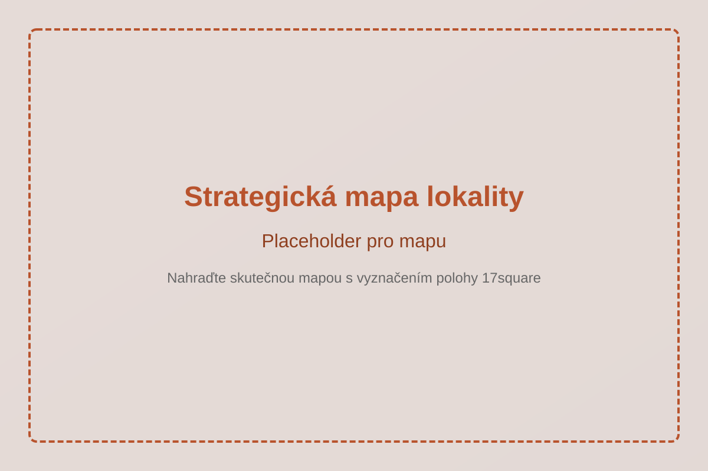
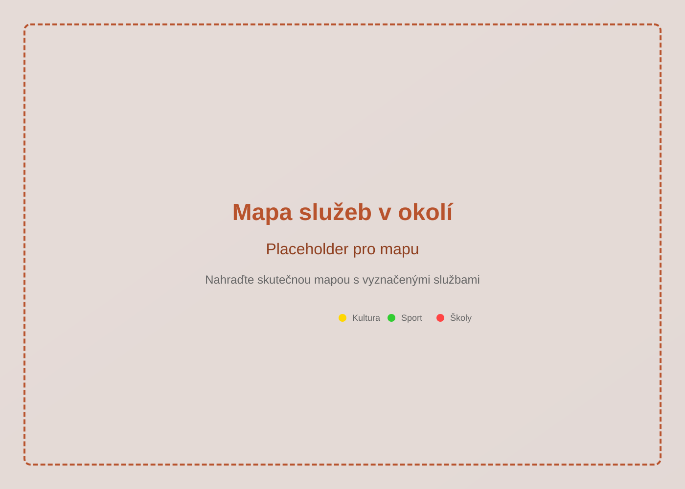

Strategická poloha v srdci Olomouce
Lokalita se nachází v těsné blízkosti centra města, což studentům umožňuje snadný přístup k univerzitním budovám, kavárnám, restauracím i kulturním zařízením. Vedle kolejí leží rozsáhlý sportovní areál nabízející širokou škálu sportovních a volnočasových aktivit. Místo je zároveň velmi dobře obsloužené městskou hromadnou dopravou, která zajišťuje pohodlné spojení s různými částmi města. Koleje navíc poskytují krásný výhled do okolní zeleně, což přispívá k příjemnému a klidnému prostředí ideálnímu pro studium i odpočinek.

Rozmístění občanské vybavenosti v Olomouci odráží historický vývoj města – největší koncentrace služeb se nachází v historickém centru a v okolí třídy 17. listopadu. Nabídka je dostatečně pestrá a odpovídá kulturnímu i společenskému významu města.
Výjimečná je také velikost Univerzity Palackého Olomouc a čtyři její kolejní budovy situované v docházkové vzdálenosti do deseti minut. Pozemek je dobře obslouzený veškerou potřebnou vybaveností, a to díky bezprostřední blízkosti obchodního centra a kompaktní městské zástavbě.
Jasnou výhodou je i blízkost sportovní infrastruktury v centru a přímé napojení na páteřní cyklostezku. Zaměření retailu v parteru na sportovce a cyklisty je proto velmi vhodná.

Navštivte nás a projděte si okolí kolejí osobně.
Domluvit návštěvu